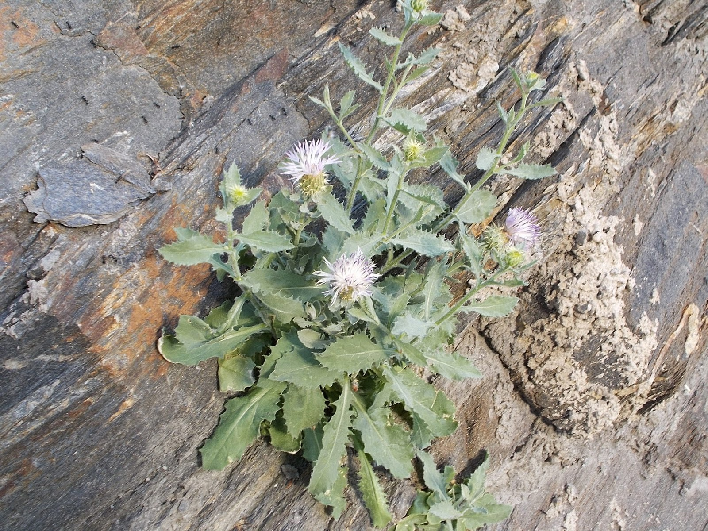

Ayuntamiento de Senés
JARDIN BOTANICO DE ESPECIES AUTOCTONAS DE SENES

Cnicus benedictus

El cardo santo (Cnicus benedictus) es una planta herbácea anual característica de terrenos secos y soleados del ámbito mediterráneo. Se distingue por su aspecto espinoso y su porte bajo, formando parte de la vegetación ruderal y de campos abandonados.
Presenta tallos erectos y ramificados, con hojas profundamente lobuladas y cubiertas de espinas, de color verde grisáceo. Sus flores son de tonalidad amarilla, agrupadas en capítulos rodeados de brácteas espinosas, lo que le confiere un aspecto robusto y defensivo frente a herbívoros.
El cardo santo se distribuye por la región mediterránea, donde crece de forma espontánea en terrenos secos, bordes de caminos y campos cultivados. Prefiere suelos bien drenados y zonas con alta exposición solar.
En la Sierra de los Filabres y en el entorno de Senés, aparece en áreas abiertas y degradadas, formando parte del matorral bajo característico de ambientes semiáridos.
El cardo santo ha sido utilizado tradicionalmente por sus propiedades medicinales, destacando sus efectos digestivos, estimulantes y aperitivos. Contiene compuestos amargos que favorecen la secreción de jugos gástricos.
En medicina popular, se ha empleado en infusiones para tratar problemas digestivos y como tónico general, aunque su uso debe realizarse con precaución.
El cardo santo simboliza la protección y la resistencia, debido a su aspecto espinoso y su capacidad para prosperar en condiciones adversas. También se asocia con la fortaleza y la defensa natural.
Su nombre refleja su uso tradicional en medicina, vinculado a propiedades consideradas beneficiosas.
En Senés, el cardo santo tambien se ha conocido como "cardo bendito" ha sido conocido por sus propiedades curativas, se utilizaba para curar las heridas, segregar saliva, antiinflamatoria, estomacal y antitérmica, pero siempre hay que usarla con precaución.
El cardo santo florece entre primavera y verano, produciendo flores amarillas que destacan en el paisaje seco y atraen a insectos polinizadores.
Su sabor amargo es una de sus características más destacadas y está relacionado con sus propiedades medicinales. Además, su aspecto espinoso actúa como mecanismo de defensa frente a herbívoros.
A pesar de su apariencia agresiva, es una planta con gran valor dentro de la tradición fitoterapéutica.